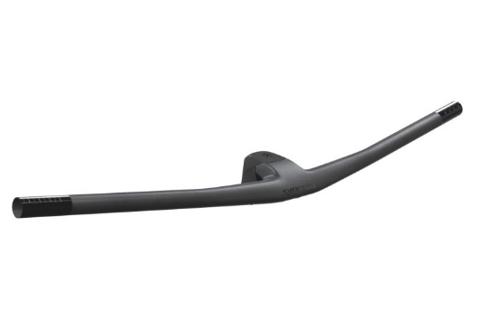
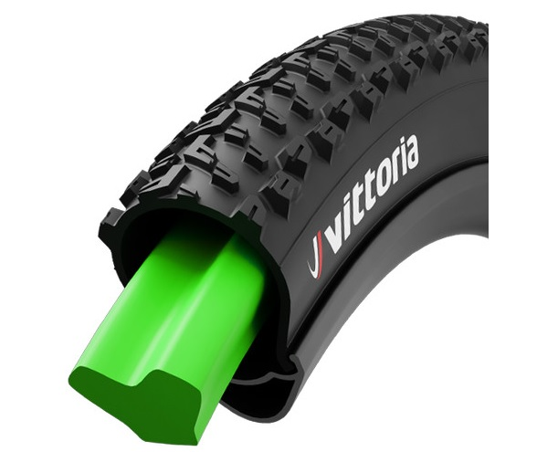
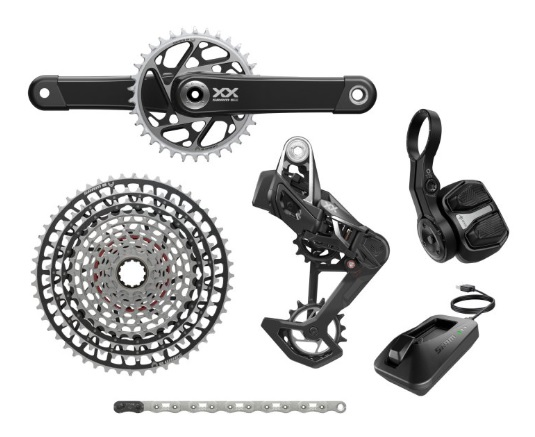

MTB (Mountain Bike – Összteleszkópos hegyikerékpár)
A „Fully” mountain bike-ok elöl és hátul is felfüggesztettek, így kimagasló kényelmet és kontrollt biztosítanak a legdurvább terepen is. Ezek a bringák ideálisak downhill, enduro vagy all-mountain használatra.
Fő jellemzők
-
Fék: Magas teljesítményű hidraulikus tárcsafékek, gyakran nagyobb féktárcsákkal (180–200 mm).

- Vázanyag: Alumínium és karbon a leggyakoribb, a felfüggesztési rendszer kialakítása nagyban meghatározza a váz súlyát és árát.
- Kormány: Széles, trail vagy riser kormány, a jobb stabilitás érdekében.Ez 700-840 mm közöti szélssséget jelent. 
- Teleszkóp: Első és hátsó felfüggesztés, különböző csillapítási beállításokkal. Ezeknek a hossza elöl 140-200 mm-ig terjed. Hátul pedig 130-180 mm-ig elterjedt.
- Dropper: A legtöbb fully bringán alapfelszereltség a dropper post, amely lejtőkön nagy előnyt jelent. A dropper útja is változó, a leggyakoribb a 125 mm-től 150 mm-es úthossz. Van már vezeték nélküli vezérlésű Dropper is (Magura és Rock Shox).
- Gumik: Manapság a legtöbb versenyzésre használt 29er-es mountain bike 29 x 2.2 -től 29 x 2.6-ig terjedő szélességű gumikat használ, amelyek kiváló tapadást biztosítanak a különböző terepviszonyok között. Beslő nélküli rendszerrel is elérhetőek, ami csökkenti a defekt kockázatát. Air-Liner-t is alkalmaznak, ami defekt esetén is megőrzi a kereket, hogy tovább lehessen veled haladni, addig amíg meg tudjuk javítani a defektet. 
- VáltásA teljes felfüggesztésű MTB-k is főleg 1x rendszerrel dolgoznak, gyakran 12 sebességes hátsó váltóval, ami kiválóan alkalmas technikás, változatos terepre. A váltókar finoman reagál, a váltás gyors és pontos, még saras környezetben is. 